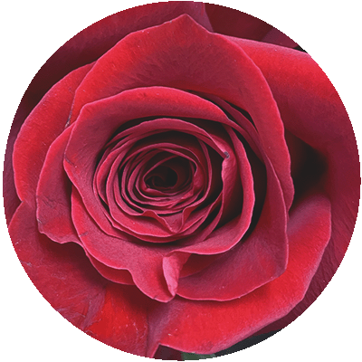

"Perfumed Words"
Over a century ago, Victorians took the words “say it with flowers” literally. From the species, to the color to even how they were handed to a recipient, flowers could speak the words that conventional codes of behavior frowned upon. Tulips signaled passion, while a bunch of peonies could symbolize bashfulness. Conversely, one could take a bouquet and hand it to someone upside down to convey an opposite meaning (their answer to “If you can’t say something nice…).
Today, this tradition is still echoed in the way we interpret the colors of different flowers. Red is most often meant to symbolize love and passion, but it can also encourage someone to be their best. Check out our guide below to find out fun ways to communicate with color!
Flower Color Meanings
Red

Red flowers are most often seen as symbolizing love and romance, but they can also convey other things such as encouragement. Red roses are a great choice for making a romantic gesture since the color is associated with the heart and the flush of love. A single rose is a symbol of love at first sight and red tulips can signal true love.
Orange
The color orange connotes warmth, energy and happiness. An arrangement with orange flowers can instantly brighten up a space and help people dealing with emotional or physical distress to feel better.
Yellow
Similar to orange, yellow flowers can symbolize friendship as well as respect and good health. A bouquet with yellow blooms can signal appreciation for hard work, or understanding that someone is having a hard time. Yellow can also mean that you understand someone is having trouble or that you wish to renew a relationship that has had trouble.
Green
Whether you want to bring a sense of calm energy to a room, or like to think outside the traditional bouquet palette, green is a great choice. Green symbolizes new life, good fortune and harmony, so an arrangement with green flowers can be a welcome gift for anyone who is moving into a new home, or recently had a promotion or is starting a new job.
Blue
The color blue has psychological associations of calm and peace. For this reason, blue flowers can communicate appreciation for a lasting relationship. They can also mean support and can be a good choice for someone who is grieving or going through an illness. For a serene atmosphere, an arrangement of blue toned flowers is a great choice.
Indigo
The deep intense blue and purple tones in indigo flowers remind us of deep ocean waters or an evening sky. It can be calming, and yet evoke a sense of mystery. Along with these feelings, indigo can also remind one of having intuition and balance. A bouquet that included indigo flowers can communicate a message to a loved one to slow down and listen to their heart.
Purple

Long associated with royalty, purple signals a range of feelings. From its history as a coveted pigment that was forbidden to commoners, we still tend to think of purple standing for wealth and elegance. But, it also has more modern connotations of creativity and quirkiness.
Pink
Pink symbolizes playfulness, delicateness and femininity. It can also symbolize openness and gentility. With associations like these, pink flowers have a balance between intensely romantic feelings and friendship. And since pink can also signal spontaneity and care, a bouquet of pink and maybe yellow and white flowers are a great surprise gift for friends and relatives.
White
Purity, innocence and fidelity associations make white flowers a popular choice for bridal bouquets and other ceremonial bouquets.
White flowers can also be a beautiful winter-inspired bouquet, or paired with other colors such as purple or pink to create a fresh-looking arrangement. Combining white blooms into a display of colorful blooms can accentuates a message of understanding.